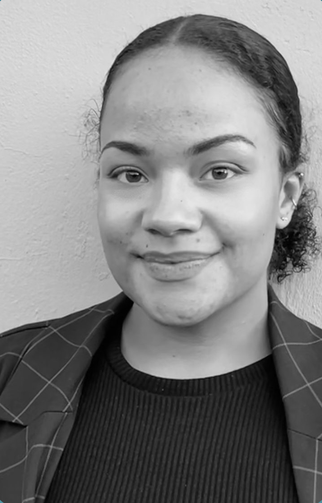

Celïa van den Broeke
Ik ben 24 jaar en woon in Leiden. Op dit moment volg ik de opleiding Communication and Multimedia Design. Ik heb mijn diploma voor de opleiding Social Work niveau 4. Naast mijn opleiding houd ik ervan om sociale activiteiten te ondernemen, zoals uitgaan of op stap gaan met vrienden. Ik zoek graag naar een goede balans in mijn leven.